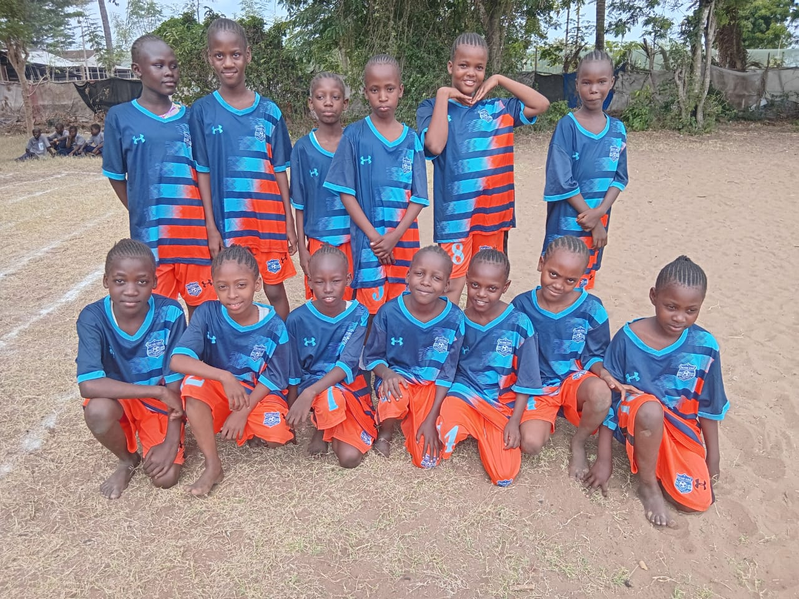
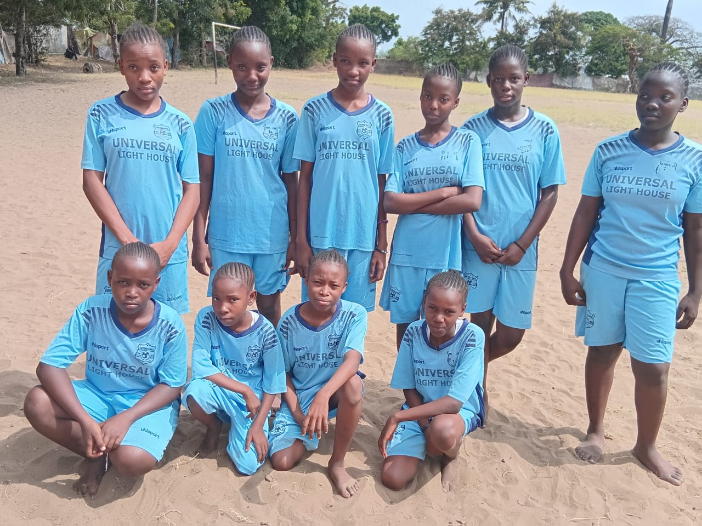
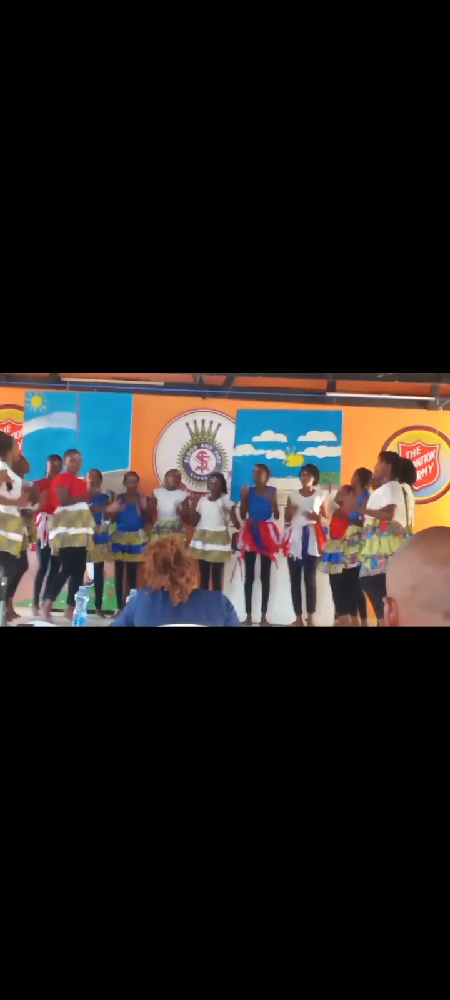
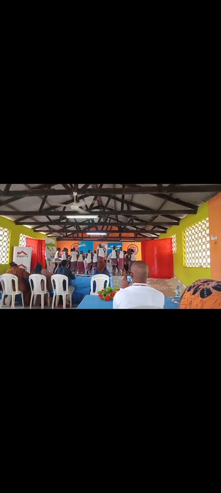

At FPFK Bethania Academy, we believe every learner has a unique gift. Our co-curricular programs are designed to build confidence, discipline, and teamwork.

Our teams compete with spirit and precision. We focus on tactical play and physical fitness, ensuring our athletes dominate on the pitch and the court.

Speed and endurance are the hallmarks of our track stars. From 100m dashes to inter-house relays, our students learn the power of perseverance.

Celebrating our rich African heritage through rhythm and movement. Our troupe is renowned for energetic performances that tell the stories of our ancestors.

Expressing contemporary creativity. Whether in a group or a solo spotlight, our dancers showcase incredible grace and modern choreography.
The voices of Bethania! Our media club handles live school broadcasts, developing public speaking skills and confidence in our future journalists.

Building character and citizenship. Our scouts are trained in survival skills, first aid, and community service, embodying our motto: "Determination is Nobility."